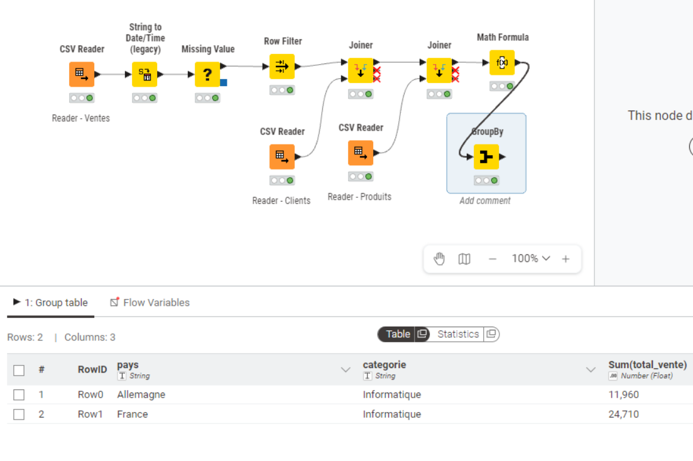

Analyse des ventes avec KNIME Analytics Platform
13/02/2026 - Créé par DRISS Amine
L'objectif de ce travail pratique était de concevoir et implémenter un flux de données (pipeline ETL) pour analyser les performances de vente d'une entreprise de commerce en ligne. Nous avons utilisé un workflow visuel avec KNIME Analytics Platform.
La finalité est de calculer le Chiffre d'Affaires total par Pays et par Catégorie de produit.
Chargement des données sources depuis trois fichiers CSV :
Le cœur du traitement des données :
date_vente au format Date (yyyy-MM-dd).client_id).client_id) pour récupérer le Pays.produit_id) pour récupérer la Catégorie et le Prix Unitaire.total_vente = quantite * prix_unitaire.pays et categorie.total_vente.Exportation des résultats agrégés vers un fichier CSV final : ventes_analytiques.csv, prêt pour la visualisation ou l'intégration en base de données.
Après exécution du pipeline ETL, voici les chiffres d'affaires consolidés :
| Pays | Catégorie | Chiffre d'Affaires (€/$) |
|---|---|---|
| Allemagne | Informatique | 11 960 |
| France | Informatique | 24 710 |
* Données basées sur l'échantillon fourni pour le TP.
Le traitement a été réalisé sans écrire de code, en utilisant les nœuds suivants :
